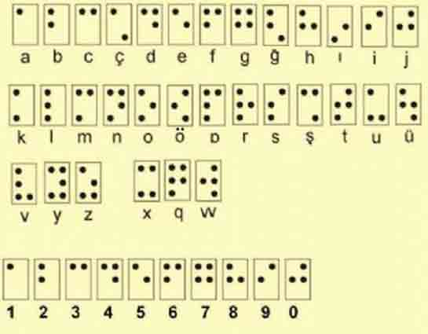

Ders 1: Braille Alfabesine Giriş ve 6 Nokta Sistemi
Braille Hücresi / Ders Materyali
Açıklamalar
Braille, 19. yüzyılda Louis Braille tarafından geliştirilen ve görme engelli bireylerin parmak uçlarıyla dokunarak okuyup yazmalarını sağlayan bir alfabe sistemidir. Temeli, **Braille Hücresi** adı verilen ve 6 kabartma noktanın farklı kombinasyonlarından oluşan yapıya dayanır.
6 Nokta Sistemi
Bir Braille hücresi, dikdörtgen şeklinde düzenlenmiş 6 noktadan oluşur. Bu noktalar, okuma ve yazma kolaylığı için belirli bir şekilde numaralandırılır:
- Sol sütun (yukarıdan aşağıya): 1, 2, 3 numaralı noktalar
- Sağ sütun (yukarıdan aşağıya): 4, 5, 6 numaralı noktalar
Harfler, rakamlar, noktalama işaretleri ve diğer semboller, bu 6 noktadan hangilerinin kabartılıp hangilerinin düz bırakıldığına göre belirlenir. Örneğin, sadece 1 numaralı nokta kabartılırsa bu "A" harfini temsil eder. Noktaların farklı kombinasyonları kullanılarak toplamda 64 (26) farklı karakter oluşturulabilir (boş hücre dahil).
Braille alfabesini öğrenirken bu 6 noktanın yerini ve numarasını zihninizde canlandırabilmek çok önemlidir. Sonraki derslerde hangi nokta kombinasyonlarının hangi harflere karşılık geldiğini öğreneceğiz.
Alıştırmalar
- Boş bir kağıda birkaç tane 6 noktalı Braille hücresi (dikdörtgen içinde 2x3 nokta) çizin ve her hücredeki noktaları doğru şekilde (1-2-3 sol, 4-5-6 sağ) numaralandırın.
- Sadece 1 numaralı noktanın kabartıldığı bir hücre çizin (Bu 'A' harfidir).
- Sadece 1 ve 2 numaralı noktaların kabartıldığı bir hücre çizin (Bu 'B' harfidir).
- 6 noktanın tamamının kabartıldığı bir hücre çizin.
- Hiçbir noktanın kabartılmadığı (boş) hücre neyi temsil ediyor olabilir? (Boşluk karakterini)
(Bu alıştırmalar, 6 nokta sistemini görsel olarak anlamanıza yardımcı olacaktır.)